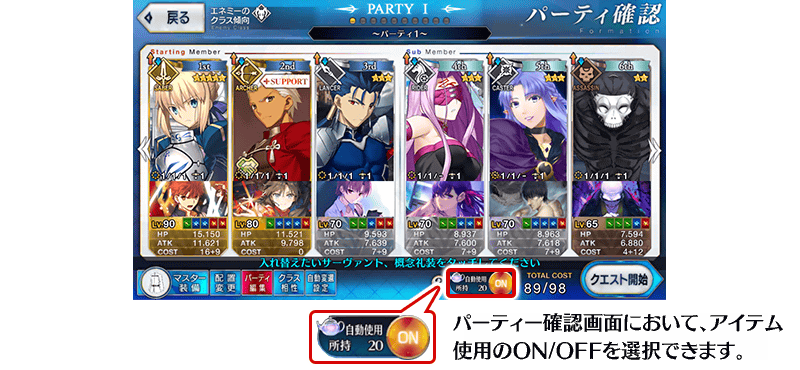
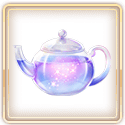

舉辦「主線關卡通過聲援宣傳活動 第4彈」！
做為預定在2021年12月下旬開幕的主線關卡一環的期間限定活動「非靈長生存圏 通古斯卡・聖域」的參加條件為通過第2部 第6章「Lostbelt No.6 妖精圓卓領域 阿瓦隆・勒・菲 星辰誕生之刻」。請務必藉此機會推進主線關卡的攻略！
＞＞關於期間限定活動「非靈長生存圏 非靈長生存圏 通古斯卡・聖域」的詳細 在此
※本頁面皆為開發中圖片。會有與實際圖片相異的情況。
◆宣傳活動舉辦期間◆
2021年12月17日(五) 17:00～12月31日(五) 22:59
在出撃可獲得絆點數的關卡時使用後，絆點數獲得量變成2倍的新道具「占星茶壺」登場！
「占星茶壺」在下述期間中，做為追加任務的報酬領取。
◆能入手新道具的任務舉辦期間◆
2021年12月17日(五) 17:00～12月26日(日) 22:59
◆道具使用期限◆
2021年12月17日(五) 17:00～2022年2月28日(一) 11:59
※「占星茶壺」有使用期限，超過使用期限「占星茶壺」會消失，敬請注意。
■關於「占星茶壺」
可在出撃可獲得絆點數的關卡時使用，使用後在關卡通過時可獲得的絆點數變成2倍。
編成想提高絆Lv.的從者向關卡挑戰吧！

◆能使用的對象關卡◆
・所有可獲得絆點數的關卡
※絆點數為在基本的絆點數透過概念禮裝和宣傳活動等包含加算值的點數變成2倍。 ※出撃1次關卡可使用「1個占星茶壺」。 ※出撃無法獲得絆點數的關卡時就算道具的使用ON，「占星茶壺」也不會消耗。 ※只有最高絆Lv.的從者出撃的情況就算道具的使用ON，「占星茶壺」也不會消耗。
下述的期間中，在「御主任務」的「限定」標籤內以期間限定追加第2部 第6章做為對象的「【主線關卡通過聲援 第4彈】任務」。
通過任務的話，可得到占星茶壺20個！
◆舉辦期間◆
2021年12月17日(五) 17:00～12月26日(日) 22:59
◆領取期間◆
2021年12月17日(五) 17:00～2022年1月2日(日) 22:59
◆道具使用期限◆
2021年12月17日(五) 17:00～2022年2月28日(一) 11:59
※「占星茶壺」有使用期限，超過使用期限「占星茶壺」會消失，敬請注意。
◆追加任務◆
| 任務名稱 | 任務達成報酬 | |
|---|---|---|
|
【主線關卡通過聲援 第4彈】 通過『Lostbelt No.6』 |
 | 占星茶壺 20個 |
※請注意舉辦期間與領取期間有所差異。 ※請注意與每週日23:00更新的普通任務(Weekly)不同欄位，超過領取期間的話無法入手報酬。 ※就算達成「【主線關卡通過聲援 第4彈】任務」，也不會計算在普通任務(Weekly)的任務進行度。 ※已經通過主線關卡第2部 第6章的情況，任務會自動達成。 ※根據主線故事的進行度會有無法達成「【主線關卡通過聲援 第4彈】任務」的情況。
下述的期間中，在「御主任務」的「限定」標籤內以期間限定追加「【主線關卡通過聲援 第4彈】任務」。
通過所有任務的話，可得到英靈結晶・星之芙芙ALL★3(HP)10張、英靈結晶・太陽之芙芙ALL★3(ATK)10張、迦勒底夢火1個、聖晶石12個！
◆舉辦期間◆
2021年12月17日(五) 17:00～12月26日(日) 22:59
◆領取期間◆
2021年12月17日(五) 17:00～2022年1月2日(日) 22:59
◆追加任務◆
| 任務名稱 | 任務達成報酬 | |
|---|---|---|
|
【主線關卡通過聲援 第4彈】 推進第1部＆第2部的主線關卡的進行度1 |

|
聖晶石 1個 |

|
英靈結晶・星之芙芙 ALL★3(HP) 2張 |
|
|
【主線關卡通過聲援 第4彈】 推進第1部＆第2部的主線關卡的進行度2 |
|
聖晶石 1個 |

|
英靈結晶・太陽之芙芙 ALL★3(ATK) 2張 |
|
|
【主線關卡通過聲援 第4彈】 推進第1部＆第2部的主線關卡的進行度3 |
|
聖晶石 1個 |
|
|
英靈結晶・星之芙芙 ALL★3(HP) 3張 |
|
|
【主線關卡通過聲援 第4彈】 推進第1部＆第2部的主線關卡的進行度4 |
|
聖晶石 2個 |
|
|
英靈結晶・太陽之芙芙 ALL★3(ATK) 3張 |
|
|
【主線關卡通過聲援 第4彈】 推進第1部＆第2部的主線關卡的進行度5 |
|
聖晶石 2個 |
|
|
英靈結晶・星之芙芙 ALL★3(HP) 5張 |
|
|
【主線關卡通過聲援 第4彈】 推進第1部＆第2部的主線關卡的進行度6 |
|
聖晶石 2個 |
|
|
英靈結晶・太陽之芙芙 ALL★3(ATK) 5張 |
|
|
【主線關卡通過聲援 第4彈】 推進第1部＆第2部的主線關卡的進行度7 |
|
聖晶石 3個 |

|
迦勒底夢火 1個 | |
※請注意舉辦期間與領取期間有所差異。 ※請注意與每週日23:00更新的普通任務(Weekly)不同欄位，超過領取期間的話無法入手報酬。 ※就算達成「【主線關卡通過聲援 第4彈】任務」，也不會計算在普通任務(Weekly)的任務進行度。 ※已經通過所有主線關卡的情況，任務會自動達成。 ※敬請注意亞種特異點(從Ⅰ到Ⅳ)、及主線分支為任務對象外。

下述的期間中，主線關卡第1部及第2部的消耗AP變成0！
藉此機會推進主線關卡吧！
◆舉辦期間◆
2021年12月17日(五) 17:00～12月31日(五) 22:59
◆對象關卡◆
・主線關卡第1部(從特異點F到終局特異點)
・主線關卡第2部(從第1章到第6章)
※現在主線關卡第2部 第5.5章為止的AP消耗量是永久變成1/2的狀態。因此，宣傳活動結束後，該主線關卡的AP消耗量會變成1/2。 ※敬請注意亞種特異點(從Ⅰ到Ⅳ)、主線分支、自由關卡為對象外。
其他還有，期間限定「阿瓦隆・勒・菲通過聲援Pick Up召喚(每日交替)」同時舉辦！
另外，
・主線關卡通過聲援宣傳活動 第1彈
・主線關卡通過聲援宣傳活動 第2彈
・主線關卡通過聲援宣傳活動 第3彈
以期間限定舉辦中！
關於詳情，請自下述橫幅確認。
■「阿瓦隆・勒・菲通過聲援Pick Up召喚(每日交替)」詳細情報

■「主線關卡通過聲援宣傳活動 第1彈」詳細情報

■「主線關卡通過聲援宣傳活動 第2彈」詳細情報

■「主線關卡通過聲援宣傳活動 第3彈」詳細情報